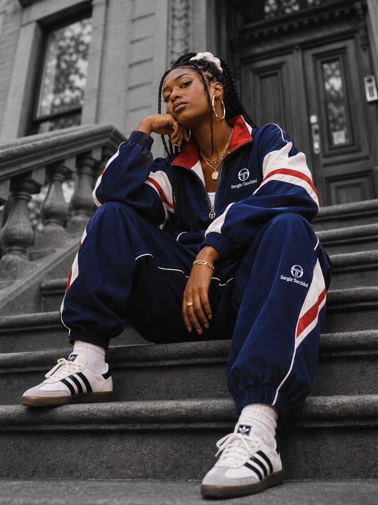
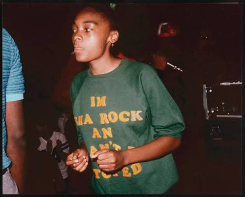
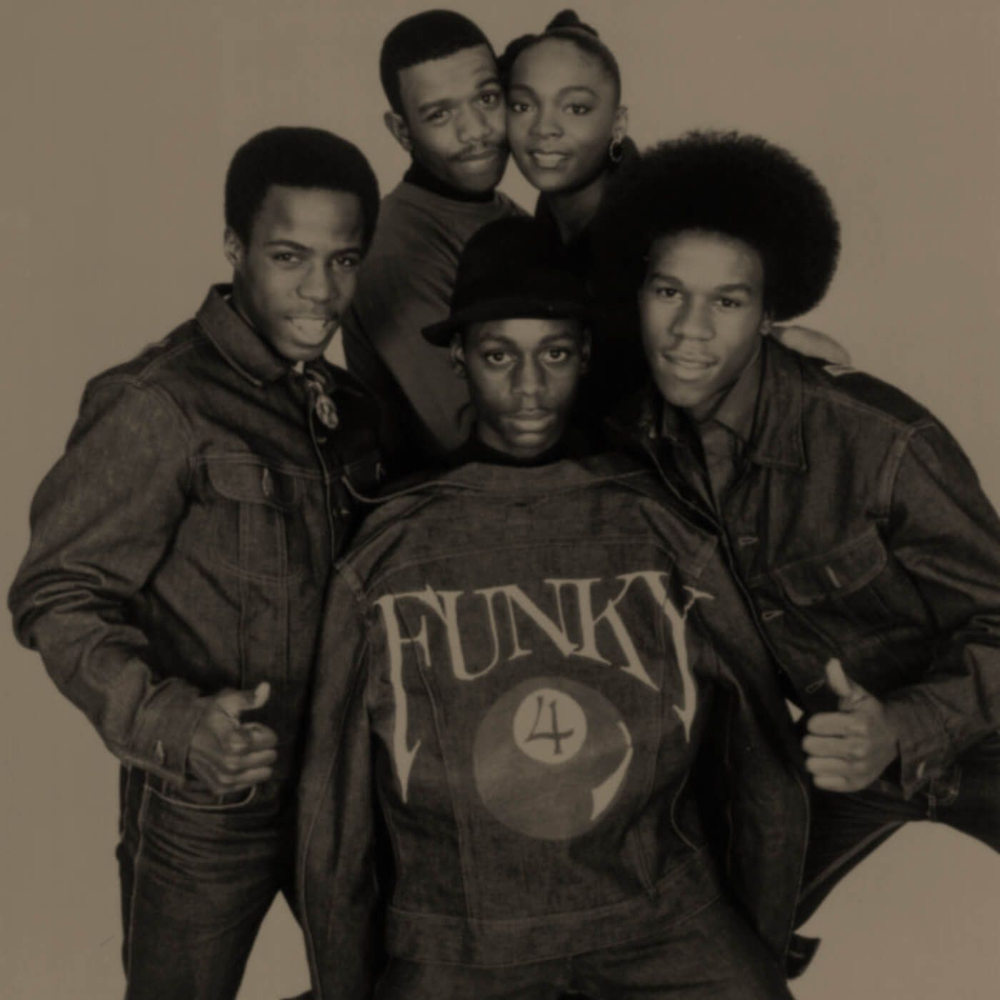
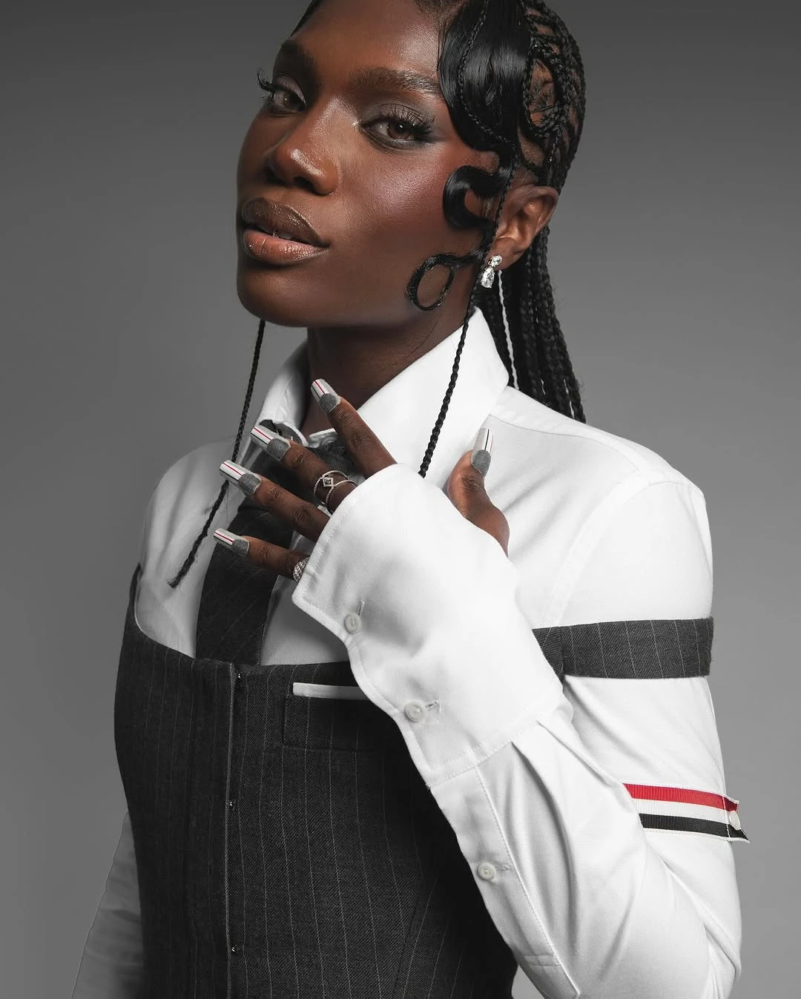

£0.00
IN RAP
Music moves.
We follow.
Groove Nomad is an independent digital magazine about music, movement and style.
Each issue follows one theme through the people, stories and videos that shaped it. No rankings. Just voices worth hearing.
Meet the ten voices ↓Ten voices.
Not a ranking. Not the whole story.

Sha-Rock

The plus one
Billed as the “plus one”, she was a woman at the centre of early rap: on record in 1979, on national TV in 1981.
Sharon Green was born on 25 October 1962 in Wilmington, North Carolina, and grew up in the South Bronx. She danced as a b-girl and wrote poems. In late 1977 she auditioned for the group that became Funky 4 + 1, and the manager Jazzy D gave her the name Sha-Rock. She was the only woman in the line-up: the “plus one”.
The sound
In 1979 the group released “Rappin’ and Rocking the House” on Enjoy Records, Bobby Robinson’s label in Harlem: about sixteen minutes, one of the first rap records by a group born at neighbourhood parties. In 1980, on Sugar Hill, came “That’s the Joint”: nine minutes over a funk and disco groove.
What to listen for
Several MCs answering each other, and Sha-Rock in the middle of it. Rowan University credits her as the first to put an echo chamber behind her voice, a trick later rappers copied. The North Carolina Music Hall of Fame says she helped set the standards for microphone technique, delivery and live performance.
1stwoman MC on a rap record, as she is widely considered
1strap group with a woman MC: Funky 4 + 1
Live on national TV
On 14 February 1981 the group played “That’s the Joint” on Saturday Night Live, invited by the host, Debbie Harry of Blondie, who knew them from downtown Manhattan. It was the first time a rap group appeared live on American national television. Sha-Rock was 18.
1979“Rappin’ and Rocking the House”, Enjoy Records
1980“That’s the Joint”, Sugar Hill
1981Saturday Night Live, 14 February
1984Beat Street, with Us Girls
2010autobiography
2022Sugar Hill agreement; Bowie State
2026North Carolina Music Hall of Fame
1strap group live on national TV
After
The group split after 1983. Sha-Rock says Sugar Hill took away her pleasure in making music: the contracts left artists very little control. With Debbie D and Lisa Lee, as Us Girls, she appeared in Beat Street (1984). Then she left the scene for many years.
She published an autobiography in 2010 and, since 2022, teaches at Bowie State University, where she is MC in residence. In 2022 she and other Sugar Hill artists announced an agreement after decades of legal battle over royalties. In 2026 she is in the North Carolina Music Hall of Fame class.
Press play
Three ways into her sound.
-
 That’s the JointFunky 4 + 1 · 1980 · Official audio
That’s the JointFunky 4 + 1 · 1980 · Official audio
-
 Rappin and Rocking the HouseFunky Four Plus One More · 1979
Rappin and Rocking the HouseFunky Four Plus One More · 1979
-
 Live at The KitchenRare footage · New York · 1980
Live at The KitchenRare footage · New York · 1980
Videos open on YouTube.
Salt-N-
Pepa


Hot, Cool
& Vicious
Two MCs and a DJ who took women in rap to gold, platinum and a Grammy.
Cheryl James and Sandra Denton met in New York in the mid-1980s. Both studied nursing at Queensborough Community College and worked the phones at Sears. A colleague, the audio student Hurby “Luv Bug” Azor, asked them to record a song for a class project: “The Show Stoppa (Is Stupid Fresh)”, an answer to Doug E. Fresh and Slick Rick’s “The Show”. It came out in 1985 under the name Super Nature.
On the record they called themselves Salt and Pepa; it reached No. 46 on Billboard’s R&B chart, and the name stuck.
The sound
They signed with Next Plateau, and Azor produced their first album, Hot, Cool & Vicious (December 1986). Soon after, sixteen-year-old Deidra Roper joined as DJ Spinderella. The breakthrough was “Push It”, the B-side of “Tramp”, in 1987: No. 19 on the Hot 100.
The Rock & Roll Hall of Fame describes their path from sparse, battle-style rap to records with New Jack Swing, R&B and pop in them. It names female empowerment, the two-MC and DJ format and a strong visual style as their mark.
What to listen for: play “The Show Stoppa”, then “Whatta Man” with En Vogue. The distance between the two is the story.
1stalbum by a woman rap act to go gold, then platinum
1stall-female rap group to win a Grammy, 1995
1stwoman DJ in the Rock Hall: Spinderella, 2025
Very Necessary
The boycott
In 1989 the Grammys added a rap category but did not televise it. The group joined the boycott led by DJ Jazzy Jeff & The Fresh Prince: “If they don’t want us, we don’t want them.”
The peak
Very Necessary (12 October 1993) reached No. 4 on the Billboard 200 and went five times platinum, with “Shoop”, “Whatta Man” and “None of Your Business”. That last song won the 1995 Grammy for best rap performance by a duo or group, the same night as Queen Latifah.
After
Brand New (1997) came after a legal break with Azor, whom the group accused of incorrect royalties.
1985“The Show Stoppa”, as Super Nature
1986Hot, Cool & Vicious
1987“Push It”, No. 19 on the Hot 100
1989the Grammy boycott
1993Very Necessary, No. 4, five times platinum
1995Grammy for “None of Your Business”
2025Rock & Roll Hall of Fame

The label folded soon after. The group split in 2002 and came back in 2007 with the VH1 show The Salt-N-Pepa Show. In 2019 Spinderella said she had been left out of a tour and sued; the case ended in a settlement.
On 8 November 2025 they entered the Rock & Roll Hall of Fame, with Missy Elliott presenting. The Hall ties Missy’s own decision to rap to their example. Spinderella is the first woman DJ inducted. At the ceremony Cheryl said their music is not on streaming.
In May 2025 the group sued UMG to get its master recordings back. On 8 January 2026 a federal judge in New York dismissed the case, finding it had not been shown that the two women ever owned the copyrights. The group announced an appeal.
Press play
Three ways into their sound.
-
 Push ItOfficial music video · Salt-N-Pepa
Push ItOfficial music video · Salt-N-Pepa
-
 ShoopVery Necessary · 1993 · Official video
ShoopVery Necessary · 1993 · Official video
-
 Whatta ManWith En Vogue · 1993 · Official video
Whatta ManWith En Vogue · 1993 · Official video
Videos open on YouTube.
.jpg)
MC Lyte

MC Lyte
At 17 she put out the first full solo rap album by a woman, and showed that one voice could carry a whole record.
Lana Moorer was born on 11 October 1970 in Queens and grew up in East Flatbush, Brooklyn. She began writing rhymes at 12, under the name Sparkle. Her way in was First Priority Music, the label of Nat Robinson, father of Audio Two (Milk Dee and Giz). With the producer King of Chill, they made her first records.
In November 1987 came her first single, “I Cram to Understand U (Sam)”. It tells, in the first person, of a relationship wrecked by crack, and it is counted among the first songs about the crack era. She was 17.
The sound
What you hear is a direct, hard-hitting voice. The Rock & Roll Hall of Fame sums up her style as “sharp braggadocio” with emotional depth and social awareness. Lyte as a Rock (19 April 1988) gave her “Paper Thin” and “10% Dis”, an answer to the rapper Antoinette. Eyes on This (3 October 1989) brought “Cha Cha Cha”, No. 1 on the Hot Rap Singles chart, and the album reached No. 86 on the Billboard 200.
In 1991 Act Like You Know moved towards new jack swing and R&B; “Poor Georgie” was her first entry in the Hot 100 (No. 83). Then Ain’t No Other (22 June 1993) went back to a tougher sound. “Ruffneck” reached No. 35 on the Hot 100 and No. 1 on the rap chart.
Ruffneck
Listen to this: play “Paper Thin”, then “Ruffneck”. Five years apart, same voice, a harder edge.
1988first full-length solo album by a female rapper, Lyte as a Rock (Rock Hall).
1993first gold single by a solo female rapper, “Ruffneck” (RIAA, November 1993).
.jpg)
.jpg)
After
In 1996, on the album Bad as I Wanna B, the remix of “Cold Rock a Party” with Missy Elliott reached No. 11 on the Hot 100. In October 2006 she was the only woman honoured at VH1’s Hip Hop Honors. In October 2014 she became the first woman to bring hip hop to the White House (Rock Hall).
The Rock Hall names Queen Latifah and Missy Elliott among the artists she influenced. In 2026 she and Queen Latifah are both in the Hall’s Early Influence category; the ceremony is on 14 November in Los Angeles.
Press play
Three ways into her sound.
-
 Paper ThinLyte as a Rock · 1988 · Official video
Paper ThinLyte as a Rock · 1988 · Official video
-
 Cha Cha ChaEyes on This · 1989 · Official video
Cha Cha ChaEyes on This · 1989 · Official video
-
 RuffneckAin’t No Other · 1993 · Official video
RuffneckAin’t No Other · 1993 · Official video
Videos open on YouTube.

QueenLatifah
What she changed
Hip-hop’s first female superstar, and the voice that made respect for women the subject of the song.
Where she comes from
Dana Elaine Owens was born on 18 March 1970 in Newark, New Jersey, and grew up in East Orange. She took the name Latifah, “delicate” and “very kind”, from a book of Arabic names at the age of eight. At high school she wrote poetry and was drawn to freestyle battles. She joined a crew called Ladies Fresh and learned to beatbox.
In 1988 she recorded a demo that led to a deal with Tommy Boy Records, where Dante Ross signed her. Her first single was “Wrath of My Madness”. Her debut album came out in 1989, when she was 19.

The sound
All Hail the Queen (1989) mixed rap with reggae, house and jazz, and she sang as well as rapped. The Library of Congress says the album showed that rap could cross genres and opened opportunities for other women. “Ladies First”, with the British rapper Monie Love, was a call for respect for women, with an Afrocentric video; the Rock & Roll Hall of Fame calls her hip-hop’s “first feminist”. At the 1991 Grammys she was nominated for Best Rap Solo Performance.
Nature of a Sista’ (1991) was her last album for Tommy Boy. Black Reign (1993), on Motown, carried “U.N.I.T.Y.”, a song against street harassment, domestic violence and the insults aimed at women in hip-hop. It won the 1995 Grammy for Best Rap Solo Performance.
Listen to this: play “Ladies First”, then “U.N.I.T.Y.”. Four years apart, one idea: respect for women.
Black Reign
The firsts
1993first album by a solo female rapper certified gold by the RIAA, Black Reign (Rock Hall).
1995first woman to win the Grammy for Best Rap Solo Performance, for “U.N.I.T.Y.”.
1998first rapper to perform at a Super Bowl halftime show.
2006first hip-hop artist with a star on the Hollywood Walk of Fame.
2021first hip-hop artist to receive the BET Lifetime Achievement Award (Rock Hall).
2023first female rapper in the National Recording Registry of the Library of Congress, with All Hail the Queen (Rock Hall).
2023first female rapper to receive a Kennedy Center Honor.

After
In 1995 she launched Flavor Unit with Shakim Compere. In 2002 she played Mama Morton in the film Chicago; the role brought an Academy Award nomination, which the Hall calls a first for female hip-hop artists. Back in music, The Dana Owens Album (2004) turned to soul and jazz and was nominated for the Grammy for Best Jazz Vocal Album. Trav’lin’ Light (2007) was nominated for Best Traditional Pop Vocal Album. Persona (2009) was a return to hip-hop.
The Rock Hall says she was not the first woman rapper, but the original female superstar of hip-hop’s golden age. It names Lizzo, Lil’ Kim, Lauryn Hill, Missy Elliott and Naughty by Nature among the artists her legacy reaches. In 2026 she and MC Lyte are both in the Hall’s Early Influence category; the ceremony is on 14 November in Los Angeles.
Press play
Three ways into her sound.
-
 U.N.I.T.Y.Black Reign · 1993 · Official video
U.N.I.T.Y.Black Reign · 1993 · Official video
-
 Ladies FirstWith Monie Love · Official video, 4K
Ladies FirstWith Monie Love · Official video, 4K
-
 Just Another Day…Black Reign · 1993 · Official video
Just Another Day…Black Reign · 1993 · Official video
Videos open on YouTube.
LaurynHill

Lauryn Hill
What she changed
The voice that put rap, soul and song on one record, and won hip-hop its first Album of the Year.
Where she comes from
Lauryn Noelle Hill was born on 26 May 1975 in East Orange, New Jersey, and grew up in South Orange, in a house where soul and gospel were always playing. As a teenager she acted on television and in film, and sang with Wyclef Jean and Pras Michel.
The trio began as the Tranzlator Crew and became the Fugees, from “refugees”, the word used for Haitian immigrants.
Their first album, Blunted on Reality, came out in 1994 to lukewarm reviews and weak sales. The Score (13 February 1996) put rap, soul and reggae together, with the hits “Killing Me Softly”, sung by Hill, and “Ready or Not”. It sold millions of copies and won the 1997 Grammy for Best Rap Album. In the group Hill both raps and sings, and she became its most recognisable figure.


The sound
In 1997 the group stopped. Hill worked on her first solo album, The Miseducation of Lauryn Hill, released on 25 August 1998. It blends hip-hop, soul, R&B and reggae, and Hill produced it with Vada Nobles and Che Guevara. It entered the Billboard 200 at number one with 422,624 copies in its first week, a record for a woman at the time.
“Doo Wop (That Thing)”, which Hill wrote and produced, debuted at number one on the Hot 100 on 14 November 1998. Billboard counts it as the first rap song by a woman to hit number one. Rap, soul and song on one record opened the way to melodic rap and neo-soul.

Listen to this: play “Killing Me Softly”, then “Doo Wop (That Thing)”. Two years apart, the same voice: first in a group, then alone.
The firsts
1998first rap song by a woman to hit number one on the Hot 100, “Doo Wop (That Thing)” (Billboard).
1999first hip-hop album to win Album of the Year, The Miseducation of Lauryn Hill (Grammy.com).
1999first woman to win five Grammys in one night (Grammy.com).
2021first album by a woman rapper certified Diamond by the RIAA (Guinness).
2026first recipient of the Living Legend Icon Award at the BET Awards.
After
On 24 February 1999 Hill won five Grammys out of ten nominations: Album of the Year, Best New Artist, Best R&B Album, Best Female R&B Vocal Performance and Best R&B Song. Counting her Fugees wins, Grammy.com lists eight wins from 19 nominations.
Then she largely withdrew from the scene. A lawsuit over the album’s credits, filed in November 1998 by a group of musicians and writers known as New Ark, ended in a settlement in 2001. Her live set MTV Unplugged No. 2.0 came out on 7 May 2002, reached number three and divided critics. So far it is her last album.
The Library of Congress added The Miseducation to the National Recording Registry in 2015, and it entered the Grammy Hall of Fame in 2024. In 2026 she was a first-time nominee for the Rock & Roll Hall of Fame, but she was not in the class announced in April.

Press play
Three ways into her sound.
-
 Doo Wop (That Thing)The Miseducation · 1998 · Official video
Doo Wop (That Thing)The Miseducation · 1998 · Official video
-
 Everything Is EverythingThe Miseducation · 1998 · Official video
Everything Is EverythingThe Miseducation · 1998 · Official video
-
 Killing Me SoftlyFugees · 1996 · Official video
Killing Me SoftlyFugees · 1996 · Official video
Videos open on YouTube.
Lil’ Kim
Bee

Lil’ Kim
What she changed
She made sex, money and power her own subjects, and carried a woman's voice in rap to the top of the pop chart.
Billboard 200
Where she comes from
Kimberly Denise Jones grew up in Bedford-Stuyvesant, Brooklyn. Her parents separated when she was nine, she was raised by her father, and she left home at 14. As a teenager she met Christopher Wallace, who became the Notorious B.I.G.
In 1994 Wallace introduced and promoted Junior M.A.F.I.A., a group in which she was the only woman. Their album Conspiracy came out on 29 August 1995, entered the Billboard 200 at number 8 and was certified Gold in December 1995.
The sound
Her solo debut, Hard Core, came out on 12 November 1996. It entered the Billboard 200 at number 11, the highest debut for a woman rap album at that time, and went double Platinum. Its lyrics spoke openly about sex, money and power. The “Ladies’ Night” remix of “Not Tonight”, with Missy Elliott, Da Brat, Left Eye and Angie Martinez, reached number 6 on the Hot 100 and earned a Grammy nomination.
With stylist Misa Hylton she built a look of coloured wigs, bright colours and high fashion. In 2001 she recorded “Lady Marmalade” with Christina Aguilera, Mýa and P!nk for the Moulin Rouge! soundtrack. It spent five weeks at number one on the Hot 100 from 2 June 2001 and won the 2002 Grammy for Best Pop Collaboration with Vocals. A woman rapper was at the centre of a pop number one.
Listen to this: play “Crush on You”, then “Lady Marmalade”. Four years apart, the same rapper: first on her own terms, then at the top of the pop chart.
Lady Marmalade
Firsts and numbers
1996 highest debut for a woman rap album at that time, Hard Core at number 11 on the Billboard 200 (VH1).
1997 first woman rapper with three number ones in a row on Billboard’s rap chart, “No Time”, “Not Tonight” and “Crush on You” (Hollywood Bowl).
2001 five weeks at number one on the Hot 100 with “Lady Marmalade” (Billboard).
2005 The Naked Truth, the only album by a woman rapper rated five mics by The Source (Biography.com).
2019 I Am Hip Hop Award at the BET Hip Hop Awards, her first BET award (Rolling Stone).
After
In February 2001 a shooting outside the Hot 97 radio station in Manhattan put her in front of a federal grand jury. On 17 March 2005 she was convicted of perjury and conspiracy for lying to that grand jury to protect friends. In July 2005 she was sentenced to a year and a day in prison and fined $50,000, and she was released in July 2006.
Her album The Naked Truth came out on 27 September 2005, eight days after she entered prison, and reached number 6 on the Billboard 200. The Source gave it five mics. Her next album, 9, came out on 11 October 2019, days after she received the I Am Hip Hop Award at the BET Hip Hop Awards.
On 19 November 2026 she is due to perform Hard Core with an orchestra at the Kings Theatre in Brooklyn, for the album’s 30th anniversary.
Press play
Three ways into her sound.
-
 Crush on YouWith Lil’ Cease · Hard Core · 1997 · Official video
Crush on YouWith Lil’ Cease · Hard Core · 1997 · Official video
-
 Not Tonight (Ladies Night Remix)With Da Brat, Left Eye, Missy Elliott, Angie Martinez · 1997
Not Tonight (Ladies Night Remix)With Da Brat, Left Eye, Missy Elliott, Angie Martinez · 1997
-
 Lady MarmaladeWith Christina Aguilera, Mýa, Pink · 2001 · Official video
Lady MarmaladeWith Christina Aguilera, Mýa, Pink · 2001 · Official video
Videos open on YouTube.

Missy Elliott
Photo: Derek Blanks / crowdMGMT

Missy Elliott wrote, produced and rapped on records that sounded like nothing else, and made videos that looked like nothing else.
Future Sound
Where she comes from
Melissa Arnette Elliott was born on 1 July 1971 in Portsmouth, Virginia. In 1991 she formed an all-girl R&B-rap group, Fayze. After she sang Jodeci songs a cappella backstage, DeVante Swing took the group, and a young producer called Timbaland, into his Swing Mob collective. The group moved to New York, renamed itself Sista and signed with Elektra, but its 1994 album, 4 All the Sistas Around da World, was shelved. Swing Mob dissolved in 1995.
Missy and Timbaland kept writing together. In 1996 they wrote and produced most of Aaliyah’s second album, One in a Million, and Missy sang on it. That success earned her an imprint of her own, Goldmind Inc., on Elektra.
The sound
Supa Dupa Fly came out on 15 July 1997 and entered the Billboard 200 at number 3, the highest debut for a woman rapper at the time. Its first single, “The Rain (Supa Dupa Fly)”, was her first solo video, directed by Hype Williams and shot with his trademark fish-eye lens.
More albums followed: Da Real World (1999), Miss E… So Addictive (2001), Under Construction (2002) and This Is Not a Test! (2003). Under Construction sold 2.1 million copies and gave her “Work It”, which reached number 2. The Cookbook (2005), her first album not made only with Timbaland, included “Lose Control”, which reached number 3.
Listen to this: The Rain (Supa Dupa Fly) · Get Ur Freak On · Work It
Firsts and numbers
- 1997 Supa Dupa Fly debuts at number 3 on the Billboard 200, the highest debut for a woman rapper at the time (Rock & Roll Hall of Fame).
- 2006 she wins the Grammy for Best Short Form Music Video with “Lose Control” (Grammy.com).
- 2019 she is inducted into the Songwriters Hall of Fame, the first woman rapper to be (Rock & Roll Hall of Fame).
- 2019 on 26 August she receives the MTV Video Vanguard Award, the first woman rapper to do so (MTV VMAs coverage).
- 2023 she is inducted into the Rock & Roll Hall of Fame, the first woman rapper to be, in her first year of eligibility (Rock & Roll Hall of Fame).
After
After The Cookbook in 2005, her next full release took 14 years: the EP Iconology, in 2019. That same year she entered the Songwriters Hall of Fame and received the Video Vanguard Award. In 2023 she was inducted into the Rock & Roll Hall of Fame, introduced by Queen Latifah at the ceremony in Brooklyn.
In 2024 she headlined a tour for the first time: Out of This World, 24 dates across North America with Busta Rhymes, Ciara and Timbaland, starting on 4 July in Vancouver. She has won four Grammy Awards and has been nominated 22 times.
Press play
Three ways into her sound.
-
 The Rain (Supa Dupa Fly)Supa Dupa Fly · 1997 · Official video
The Rain (Supa Dupa Fly)Supa Dupa Fly · 1997 · Official video
-
 Get Ur Freak OnMiss E… So Addictive · 2001 · Official video
Get Ur Freak OnMiss E… So Addictive · 2001 · Official video
-
 Work ItUnder Construction · 2002 · Official video
Work ItUnder Construction · 2002 · Official video
Videos open on YouTube.
Rapsody

Culture over everything
Rapsody made Black women the subject of her rap. She named the songs on her album Eve after Black women who shaped her, and her writing earned her Grammy nominations without a radio hit. In 2025 she won her first Grammy.
Where she comes from
Marlanna Evans was born on 21 January 1983 and grew up in Snow Hill, a small town in North Carolina about an hour from Raleigh. As a child she watched Yo! MTV Raps and counted MC Lyte as an early influence. She later called Lauryn Hill an all-time favourite.
At North Carolina State University she joined the hip-hop collective H2O and its spin-off group Kooley High, and the producer 9th Wonder took notice. She made her recording debut on his 2007 album The Dream Merchant 2 and in 2008 signed to his label, It’s a Wonderful World Music Group. Her mixtape Return of the B-Girl came out on 7 December 2010 and her debut album, The Idea of Beautiful, in 2012. In July 2016 she signed to Jay-Z’s Roc Nation.
_(cropped).jpg)
Live at the Apollo Theater
The sound
Rapsody is known for dense, careful rhyming over soulful boom-bap beats. Laila’s Wisdom (22 September 2017) was her first album on Roc Nation. Eve (23 August 2019) names its songs after Black women, among them Nina, Aaliyah, Oprah and Serena; she told NPR she is “an extension of every black woman”. Please Don’t Cry (17 May 2024) came after five years, with 22 songs and guests including Erykah Badu and Lil Wayne.
Listen to this: “3:AM” (with Erykah Badu), “Nina” and “Asteroids” (with Hit-Boy).
Firsts and numbers
- 2016 She is nominated for the Album of the Year Grammy for her contribution to Kendrick Lamar’s To Pimp a Butterfly. (Grammy.com)
- 2018 Laila’s Wisdom is nominated for Best Rap Album and “Sassy” for Best Rap Song; she is only the fifth woman ever nominated in the album category. (Grammy.com; Indy Week)
- 2019 Eve (23 August) peaks at No. 76 on the Billboard 200. (Wikipedia)
- 2025 On 2 February, at the 67th Grammy Awards, “3:AM” with Erykah Badu wins Best Melodic Rap Performance, her first Grammy win; “Asteroids” is also nominated for Best Rap Song. (Grammy.com; NPR)
- 2026 “WeMaj”, by Terrace Martin and Kenyon Dixon featuring Rapsody, is nominated for Best Melodic Rap Performance. (Grammy.com)
After
Her fifth album, God Gotta Afro & Gold Hoops, came out on 21 August 2026 on 16 tracks, with Black identity and womanhood at the centre. Much of it was recorded in Johannesburg, a trip to Ghana shaped the title, and George Clinton is among the collaborators. In October she began a four-city, unplugged-style tour of the album.
Press play
Three ways into her sound.
-
 PowerLaila’s Wisdom · 2017 · Official video
PowerLaila’s Wisdom · 2017 · Official video
-
 SojournerEve · 2019 · Official audio
SojournerEve · 2019 · Official audio
-
 God Gotta AfroGod Gotta Afro & Gold Hoops · 2026 · Official video
God Gotta AfroGod Gotta Afro & Gold Hoops · 2026 · Official video
Videos open on YouTube.

LittleSimz
Her label. Her rules.

Simbi
Little Simz proved that a UK rapper could win the biggest prize in British music without the machine behind her. She built her first three albums independently, ran her own label, Age 101, and in 2022 took the Mercury Prize with an album about being shy, tired and honest. She made introspection a headline act.
Where she comes from
Simbiatu Ajikawo was born on 23 February 1994 in Islington, North London, to Nigerian parents. Everyone called her Simbi. St Mary’s Youth Club on Upper Street became a second home, and it is where she started to write and perform.
Acting came first. She appeared in the BBC series Spirit Warriors (2010) and in the E4 drama Youngers (2013), while releasing mixtapes on her own. In 2015 Kendrick Lamar publicly praised her, and that year she put out her debut album, A Curious Tale of Trials + Persons.
Grey Area
to Lotus


The sound
Her music is UK rap with a band behind it: live instruments, strings and a clear, conversational voice. On Grey Area (2019) and the albums that followed, she worked closely with the producer Inflo. For Lotus (2025) she turned to a new producer, Miles Clinton James, after the end of that partnership.
Listen to this: “Garage Palace” (Gorillaz featuring Little Simz) and “Flood” (2025).
Firsts and numbers
- 2016 A Curious Tale of Trials + Persons wins the AIM Independent Album of the Year. (Wikipedia)
- 2019 Grey Area (1 March) peaks at No. 87 on the UK Albums Chart, is shortlisted for the Mercury Prize, and in 2020 wins Best Album at the Ivor Novello and NME Awards. (Official Charts; Wikipedia)
- 2021 Sometimes I Might Be Introvert (3 September) reaches No. 4 in the UK, and she wins MOBO Best Female Act. (Official Charts; Wikipedia)
- 2022 She wins the Mercury Prize on 18 October and the Brit Award for Best New Artist. (Wikipedia)
- 2025 Lotus (6 June) peaks at No. 3, her highest-charting album, with 14,115 opening sales; the same month she curates and plays Meltdown at the Southbank Centre (12–22 June). (Music Week; Southbank Centre)
After
On 8 May 2026 she released the Sugar Girl EP through AWAL, with JT, Deela and 070 Shake. In the autumn of 2026 she and Olivia Dean led the nominations for the MOBO Awards. Her path is still the same: independent, self-written, and growing album by album.
Press play
Three ways into her sound.
-
 VenomGrey Area · 2019 · Live on COLORS
VenomGrey Area · 2019 · Live on COLORS
-
 IntrovertSometimes I Might Be Introvert · 2021 · Official video
IntrovertSometimes I Might Be Introvert · 2021 · Official video
-
 Woman ft. Cleo SolSometimes I Might Be Introvert · 2021 · Official video
Woman ft. Cleo SolSometimes I Might Be Introvert · 2021 · Official video
Videos open on YouTube.
Doechii
Grammy for Best Rap Album, 2025, for Alligator Bites Never Heal.


Doechii
Doechii moves from aggressive club tracks to introspective storytelling in the same project, and she won the Best Rap Album Grammy with a mixtape.
Where she comes from
Jaylah Ji’mya Hickmon was born on 14 August 1998 in Tampa, Florida. She sang in a church in Tampa, was raised by her single mother, Celesia, and attended Howard W. Blake High School, where she studied choral music. She calls herself the “Swamp Princess”, a tribute to what she describes as the organised chaos of Florida.
Her first mixtape, Coven Music Session, Vol. 1, came out in 2019, and her self-funded debut EP, Oh the Places You’ll Go, in 2020. Her single “Yucky Blucky Fruitcake”, released in September 2020, went viral on TikTok. In 2022 she signed with Top Dawg Entertainment, in a joint deal with Capitol Records, and became the first woman rapper on the label. In April 2023 she played Coachella.
.webp)
Mixtape
The sound
Alligator Bites Never Heal, her third mixtape, came out in August 2024 and reached the top ten of the Billboard 200. It runs from aggressive club tracks to smooth R&B and sharp, fast rapping. Pitchfork called it her most ambitious and musically diverse release. Its best-known songs are “Nissan Altima” and “Denial Is a River”, and “Denial Is a River” and “Anxiety” both reached the UK top 10.
Listen to this: Nissan Altima · Denial Is a River · Anxiety
Firsts and numbers
- 2022 she signs with Top Dawg Entertainment and becomes the first woman rapper on the label (Revolt).
- 2023 she receives the Rising Star award at Billboard Women in Music (uDiscover Music).
- 2025 on 2 February she wins the Grammy for Best Rap Album with Alligator Bites Never Heal, the third woman to win the category after Lauryn Hill and Cardi B (The Hollywood Reporter).
- 2025 Billboard names her Woman of the Year, announced on 10 March (Associated Press).
- 2026 she wins the Grammy for Best Music Video with “Anxiety” at the 68th Grammy Awards (Evening Standard).
After
On 30 December 2025 she released the single “Girl, Get Up” with SZA. At the 2026 Grammys she said she has a new album coming, and spoke of a different head space, of buying her first home and of showing how she feels as a woman today. In October 2026 she released “BOMBS”, her first solo release of the year, which continues her Swamp Sessions series of tracks. At the time of writing, her debut studio album has no announced title or date.
Press play
Three ways into her sound.
-
 CatfishAlligator Bites Never Heal · 2024 · Swamp Sessions
CatfishAlligator Bites Never Heal · 2024 · Swamp Sessions
-
 Denial Is a RiverAlligator Bites Never Heal · 2024 · Official video
Denial Is a RiverAlligator Bites Never Heal · 2024 · Official video
-
 Anxiety2025 · Video
Anxiety2025 · Video
Videos open on YouTube.

Lady Pink

LadyPink
Beyond the music
She started painting New York’s subway cars at fifteen. Today her work hangs in museums.
- 1964Born in Ecuador
- 1979–1985The trains
- 1983Wild Style
She grew up in Queens. In 1979, at Manhattan’s High School of Art and Design, she started writing graffiti, her first tags her boyfriend’s name. Several accounts credit Seen, of the TC5 crew, with “Pink”; “Lady” came from her love of Victorian romances.

TheTrains
From 1979 to 1985 she painted subway cars, one of the few women visible in a scene dominated by men. She is also associated with the TC5 and TPA crews.
She is the first to correct the legend: she was not the first woman to write graffiti, and she names Barbara 62, Eva 62 and Charmin 65 as earlier writers.
- 1980Ladies of the Arts, her all-female crew
- 1982The Death of Graffiti, her answer to the campaign to wipe the trains clean

“I was a feminist and I didn’t know it.”
Lady Pink, Artnet News
Wild Style
In 1983 Charlie Ahearn’s film Wild Style followed graffiti, DJing, MCing and breakdance through early eighties New York. Lady Pink was one of its stars, and the role made her a hip-hop cult figure.
Her ties to the music stay visual: the 2010 exhibition Two Turntables and a Microphone and a 2020 mural backdrop for DMC.


From the wall to the museum
She was exhibiting while still in high school. In 1981 the show New York/New Wave at MoMA PS1 put her beside Jean-Michel Basquiat and Keith Haring, and from the early eighties she worked with Jenny Holzer.
Her official biography lists the Whitney, the Met, the Brooklyn Museum, MoMA and the Groninger Museum among her collections.
A mural at MoMA PS1.
Still painting
In 2025 her solo show Miss Subway NYC at D’Stassi Art in London rebuilt a graffiti-covered subway station at full scale. She keeps painting murals with her studio, PinkSmith Designs.
Watch next
- Wild Style (1983)
- BBC In the Studio
- Hyperallergic podcast

Martha Cooper

MarthaCooper
Martha Cooper photographed New York’s subway graffiti and early hip-hop when many people saw only vandalism. Her 1984 book Subway Art, made with Henry Chalfant and often called the bible of graffiti, carried the city’s lettering and its writers’ names around the world. Her pictures of writers, breakers and children at play treated a street culture as something worth keeping.

Where she comes from
Martha Cooper was born in Baltimore, Maryland, in 1943. Her father and uncle ran a camera shop there, and her father gave her a camera when she was a small child. She studied art at Grinnell College, taught English in Thailand with the Peace Corps and studied ethnology at Oxford.
From 1977 to 1980 she was a staff photographer at the New York Post, the paper’s first woman in the job. While photographing children at play on the Lower East Side, she met a boy who wrote as HE3. He showed her his sketchbook and introduced her to the writer Dondi White, and she began photographing writers at work in the train yards.


The work
Subway Art (1984), by Cooper and Chalfant, was published by Thames & Hudson in London after American publishers turned it down because they saw graffiti as vandalism. It sold slowly at first, but it has never gone out of print. Hip Hop Files: Photographs 1979–1984 (2004) gathers her early pictures of writers, breakers, DJs and MCs.
Graffiti, she said, “was always a guy thing”, and she photographed the few women in it: Lady Pink on a train in 1982, and later, with text by Nika Kramer, women who break around the world in We B*Girlz (2005).
Where to see her work
- Urban Nation page
- Martha Cooper: Streetwise at the Bronx Documentary Center
- The trailer of the documentary Martha: A Picture Story

Firsts and numbers
- 1977She joins the New York Post, where she works until 1980, as its first woman staff photographer. (Urban Nation; Artnet)
- 22 April 1981The Village Voice publishes Sally Banes’s feature on breaking, “Physical Graffiti: Breaking is Hard to Do”, with Cooper’s photographs. (The Village Voice)
- 1984Subway Art comes out in London (Thames & Hudson) and New York (Holt, Rinehart and Winston); the publisher says it has sold nearly half a million copies across formats and editions. (Thames & Hudson; Free Library of Philadelphia)
- 2005We B*Girlz (powerHouse Books) gathers more than 500 photographs and illustrations of women who break, from around the world. (powerHouse Books; San Antonio Current)
- 25 April 2019Martha: A Picture Story, Selina Miles’s documentary about her, premieres at the Tribeca Film Festival. (Tribeca Festival)

After
Martha Cooper: Taking Pictures, her retrospective at the Urban Nation museum in Berlin, opened on 2 October 2020 and ran until May 2022. In September 2022 Prestel published Spray Nation, with previously unpublished photographs of 1980s New York graffiti from her slides. In 2025–26 her Lower East Side pictures were shown beside Clayton Patterson’s in Concrete Chronicles at City Lore in New York (21 October 2025 to 1 February 2026), and Martha Cooper: Streetwise at the Bronx Documentary Center (9 April to 14 June 2026) surveyed nearly six decades of her work. She still shoots projects around the world.

SophieBramly

SophieBramly
Sophie Bramly photographed New York’s early hip-hop from the inside, in 1982–84, across DJing, MCing, breaking and graffiti, and she showed the artists’ lives offstage. Back in France she worked on TF1’s H.I.P. H.O.P. in 1984, and in 1987 she created, produced and presented Yo!, a hip-hop show for MTV Europe that preceded the American Yo! MTV Raps.

Where she comes from
Sophie Bramly was born in Tunis, Tunisia, in 1959, and her family moved to Paris in 1961. She grew up there, studied at the Penninghen art school and photographed for magazines including Paris Match and Elle.
In 1981 she moved to New York. She discovered breaking at a party in Union Square, then went to block parties in the Bronx and to hip-hop nights at the Roxy. Between 1982 and 1984 she photographed DJs such as Kool Herc, Afrika Bambaataa and Grandmaster Flash, and groups including Run-DMC and the Beastie Boys. Among the few women she photographed were the rapper Lisa Lee and the graffiti writer Lady Pink.


The work
Back in France in 1984, Bramly worked as artistic director of H.I.P. H.O.P., by her own account, and designed its logo. The weekly TF1 show, hosted by Sidney, began on 14 January and is France’s first television programme devoted to hip-hop. The book Hip-hop story, published in Paris by Hachette Jeunesse in 1984, lists her among its authors.
In 1987 she moved to London to work with MTV Europe’s launch team, and in October that year she created, produced and presented Yo!, a weekly hip-hop show. She recalls that Afrika Bambaataa was her first guest. The American Yo! MTV Raps, created by Ted Demme and Peter Dougherty, followed on 6 August 1988, and Le Monde describes her European format as its basis.
Her book Yo! The Early Days of Hip-Hop 1982–84, published by Soul Jazz Books in late 2021, collects her photographs from those years, with an introduction by Bill Adler.
Where to see her work
- Her website, sophiebramly.me
- The Soul Jazz Books page for her book
- The INA archive video of Sidney interviewing her on TF1 in 1984

Firsts and numbers
- 14 January 1984TF1 broadcasts the first episode of H.I.P. H.O.P., hosted by Sidney; Bramly works on it as artistic director and designs the logo. (INA; Le Monde)
- October 1987MTV Europe launches Yo!, which she created, produced and presents; a Billboard issue of 7 November 1987 lists it as a half-hour weekly show with her as writer and host. (Le Monde; Billboard)
- 25 September 2017France’s Ministry of Culture names her a Chevalier de l’ordre des Arts et des Lettres, listing her as a photographer. (Ministry of Culture)
- November 2021Soul Jazz Books publishes Yo! The Early Days of Hip-Hop 1982–84 in the UK; its North American distributor lists 4 January 2022. (Soul Jazz Books; Artbook/D.A.P.)
- 17 December 2021 to 24 July 2022Hip-Hop 360: Gloire à l’art de rue at the Philharmonie de Paris includes her photographs. (Philharmonie de Paris)
%20%C2%A9%20Sophie%20Bramly.jpg)
After
In 2023 she published RBX50NEUF100, a project about young people in Roubaix, after Anti_Fashion commissioned her to follow young residents for the city’s URBX festival. From 2 October to 18 December 2025 Quai de la Photo included her in Urban Photo – 50 ans d’esthétiques urbaines, and in 2026 she was among the artists of Beyond the Streets at La Villette in Paris, which opened on 27 May. In July 2026 she gave an interview about her role in bringing hip-hop to France, and she remains active.
Honorable
mentions
Photo: Lloll Arena Studio / Pexels
Colophon
- AboutGroove Nomad is an independent digital magazine about music, movement and style.
Each issue follows one theme through the people, stories and videos that shaped it. No rankings. Just voices worth hearing. - Why it existsIt was born from a love of the music magazines of the 1980s and 1990s: a new space with an old style.